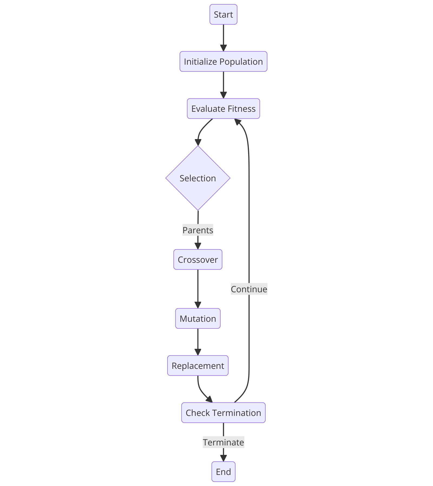

GeneticAlgorithm
A Julia package providing genetic algorithms for optimization. It provides diffrent implementation of mutation, recombination, crossover and selection functions. Documentation for GeneticAlgorithm.
Important
This package is build for the Julia Programming for Machine Learning course at TU Berlin and will will not be maintained afterwards.
What is a Genetic Algorithm?
A Genetic Algorithm is a technique based on natural evolution and genetics. It solves constrained and unconstrained optimization problems in which traditional algorithms and methods might struggle. It is part of the class of evolutionary algorithms.
The following chart shows the basic steps of a Genetic Algorithm:

Outline of a Genetic Algorithm:
- Initialisation: creates the initial population of individuals with random chromosomes
- Evaluation: evaluate the fitness of each individual using the fitness function
- Selection: select the best individuals based on their fitness score to select parents for the new generation
- Crossover: the selected parents are combined to produce offspring
- Mutation: some chromosomes are mutated
- Repeat: repeat this the Evaluation, Selection, Crossover, and Mutation until a solution is found or the termination condition is met
Getting started
The package can be installed with the Julia package manager. From the Julia REPL, type ] to enter the Pkg REPL mode and run:
] add https://github.com/MaxHTu/GeneticAlgorithm.jlThis is a simple example unsing a genetic algorithm to solve he Rosenbrock function.
using GeneticAlgorithm
genAlgo(50, true, 2, rosenbrock, 50, 0.25, 0.1)GeneticAlgorithm.geneticAlgorithm — FunctiongeneticAlgorithm( popSize::Integer, unitValues::Type, unitShape::Integer, fitnessFunc::Function, genNum::Integer, selection::Function, crossover::Function, mutation::Function, crossRate::Real, mutRate::Real, nextGenAmt::Real, terminationNum::Real; initFunc::Function )
Evolve the population of units for a specified number of generations. The loop creates a new population every generation by selecting units with higher fitness, recombinating and mutating them until the old population can be replaced by a fitter one.
Arguments
fitnessFunc: Fitness function.popSize: Size of population.unitValues: Type of unit.unitShape: Length of a unit vector.genNum: Number of generations.selection: Selection function.crossover: Crossover function.mutation: Mutation function.crossRate: Crossover rate.mutRate: Mutation rate.nextGenAmt: amount of genes that are automatically copied to new generationterminationNum: number of iteration after which the algorithm aborts if there is no change in fitness value from the best geneinitFunc: function to generate initial population
GeneticAlgorithm.genAlgo — FunctiongenAlgo( popSize::Integer, unitValues::Type, unitShape::Integer, fitnessFunc::Function, genNum::Integer, selection::Function, crossover::Function, mutation::Function, crossRate::Real, mutRate::Real )
TODO: description
Arguments
fitnessFunc: Fitness function.popSize: Size of population.unitValues: Type of unit.unitShape: Length of a unit vector.genNum: Number of generations.selection: Selection function.crossover: Crossover function.mutation: Mutation function.crossRate: Crossover rate.mutRate: Mutation rate.
GeneticAlgorithm.binarystring — Methodbinarystring(x::AbstractVector{Bool})Compute the fitness of a binary string unit.
Arguments
x: Input vector.
Returns
- The digit sum of input vector.
GeneticAlgorithm.default_selection — Methoddefault_selection(population::Union{AbstractVector,AbstractMatrix}, num::Integer)Selects a specified number of individuals from a population.
Arguments
population: The population from which individuals will be selected.num: The number of individuals to select.
Returns
An array of selected individuals.
GeneticAlgorithm.genAlgo — MethodgenAlgo( popSize::Integer, unitValues::Type, unitShape::Integer, fitnessFunc::Function, genNum::Integer, selection::Function, crossover::Function, mutation::Function, crossRate::Real, mutRate::Real )
TODO: description
Arguments
fitnessFunc: Fitness function.popSize: Size of population.unitValues: Type of unit.unitShape: Length of a unit vector.genNum: Number of generations.selection: Selection function.crossover: Crossover function.mutation: Mutation function.crossRate: Crossover rate.mutRate: Mutation rate.
GeneticAlgorithm.geneticAlgorithm — MethodgeneticAlgorithm( popSize::Integer, unitValues::Type, unitShape::Integer, fitnessFunc::Function, genNum::Integer, selection::Function, crossover::Function, mutation::Function, crossRate::Real, mutRate::Real, nextGenAmt::Real, terminationNum::Real; initFunc::Function )
Evolve the population of units for a specified number of generations. The loop creates a new population every generation by selecting units with higher fitness, recombinating and mutating them until the old population can be replaced by a fitter one.
Arguments
fitnessFunc: Fitness function.popSize: Size of population.unitValues: Type of unit.unitShape: Length of a unit vector.genNum: Number of generations.selection: Selection function.crossover: Crossover function.mutation: Mutation function.crossRate: Crossover rate.mutRate: Mutation rate.nextGenAmt: amount of genes that are automatically copied to new generationterminationNum: number of iteration after which the algorithm aborts if there is no change in fitness value from the best geneinitFunc: function to generate initial population
GeneticAlgorithm.griewank — Methodgriewank(x::AbstractVector{<:Number})Compute the Griewank function value for a given input vector x.
The Griewank function is a multimodal function used as a performance test problem for optimization algorithms. It is defined as the difference between two terms: the sum of the squares of each element in x divided by 4000, and the product of the cosine of each element in x divided by the square root of its index.
Arguments
x: Input vector.
Returns
- The Griewank function value.
GeneticAlgorithm.k_point_crossover — Methodk_point_crossover(gene1::Union{AbstractVector, AbstractMatrix}, gene2::Union{AbstractVector, AbstractMatrix}, k::Integer)Recombinate two units by exchanging their genes at k random points
Arguments
gene1: Parent unit 1.gene2: Parent unit 2.k: # of crossover points.
Returns
- Two recombined child units.
GeneticAlgorithm.mutation! — Methodmutation!(gene, mutation_prob, unitValues)Mutates the given gene based on the mutation_prob and unitValues.
Arguments
gene: A matrix or vector containing real numbers or boolean values.mutation_prob: The probability of mutation for each element in thegene.unitValues: A type or vector representing the range of values for mutation.
Details
- For each element in the
gene, if a random number is less thanmutation_prob, the element is mutated. - If
unitValuesis an abstract range of floating-point numbers, the mutated element is transformed to fit within the range. - If
unitValuesis a vector of boolean values, the mutated element is negated. - Otherwise, the mutated element is replaced with a random value from
unitValues.
Returns
The mutated gene.
GeneticAlgorithm.quartic — Methodquartic(x::AbstractVector{<:Number})Compute the quartic function value for a given input vector x.
The quartic function is defined as the sum of the product of each element in x raised to the power of 4 and its index, plus a random number.
Arguments
x: Input vector.
Returns
- The quartic function value.
GeneticAlgorithm.rastrigin — Methodrastrigin(x::AbstractVector{<:Number})Compute the Rastrigin function value for a given input vector x.
The Rastrigin function is a multimodal function used as a performance test problem for optimization algorithms. It is defined as a sum of terms involving the square of each element in x, minus 10 times the cosine of 2π times each element in x.
Arguments
x: Input vector.
Returns
- The Rastrigin function value.
GeneticAlgorithm.rosenbrock — Methodrosenbrock(x::Vector{<:Number}; a::Integer, b::Integer)Compute the Rosenbrock function value for a given input vector x.
The Rosenbrock function is a non-convex function used as a performance test problem for optimization algorithms. It is defined as the sum of a series of terms involving the squares of differences between adjacent elements of x.
Arguments
x: Input vector.a: value for the variable ab: value for the variable b
Returns
- The Rosenbrock function value.
GeneticAlgorithm.schwefel — Methodschwefel(x::AbstractVector{<:Number})Compute the Schwefel function value for a given input vector x.
The Schwefel function is a multimodal function used as a performance test problem for optimization algorithms. It is defined as a sum of terms involving the sine function and the square root of the absolute value of each element in x.
Arguments
x: Input vector.
Returns
- The Schwefel function value.
GeneticAlgorithm.single_point_crossover — Methodsingle_point_crossover(gene1::Union{AbstractVector, AbstractMatrix}, gene2::Union{AbstractVector, AbstractMatrix})Recombinate two units by exchanging their genes from a random index onward.
Arguments
gene1: Parent unit 1.gene2: Parent unit 2.
Returns
- Two recombined child units.
GeneticAlgorithm.solveRosenbrock — MethodsolveRosenbrock(; a::Integer, b::Integer, popSize::Integer, fitnessFunc::Function, unitValues::Union{Type, AbstractVector{<:AbstractFloat}, AbstractRange{<:Real}}, unitShape::AbstractVector{<:Integer}, genNum::Integer, crossRate::Real, mutRate::Real, nextGenAmt::Number, selectionFunc::Function, crossoverFunc::Function, mutationFunc::Function , terminationNum::Real )
Runs the rosenbrock function with the geneticAlgorithm
Arguments
a: rosenbrock function variableb: rosenbrock function variablepopSize: Size of population.fitnessFunc: Fitness function.unitValues: Type of unit.unitShape: Length of a unit vector.genNum: Number of generations.crossRate: Crossover rate.mutRate: Mutation rate.nextGenAmt: amount of genes that are automatically copied to new generationselectionFunc: Selection function.crossoverFunc: Crossover function.mutationFunc: Mutation function.terminationNum: number of iteration after which the algorithm aborts if there is no change in fitness value from the best gene
GeneticAlgorithm.sphere — Methodsphere(x::Vector{<:Number})Compute the sphere function value for a given input vector x.
The sphere function is defined as the sum of the squares of each element in x.
Arguments
x: Input vector.
Returns
- The sphere function value.
GeneticAlgorithm.tournament_selection — Methodtournament_selection(population::Vector, fitness::Vector, tournamentSize::Int, num::Integer)Select one unit with higher fitness over several tournament rounds with randomly chosen groups of unit from the population .
Arguments
population: Population vector.fitness: Vector of fitness values.tournamentSize: Size of tournament groups.num: Amount of genes to select
Returns
- The unit with better fitness value.
GeneticAlgorithm.uniform_crossover — Methoduniform_crossover(gene1::Union{AbstractVector, AbstractMatrix}, gene2::Union{AbstractVector, AbstractMatrix})Recombinate two units by iterating a gene and swapping the values with a 50% chance
Arguments
gene1: Parent unit 1.gene2: Parent unit 2.
Returns
- Two recombined child units.
GeneticAlgorithm.weighted_selection — Methodweighted_selection(population::AbstractVector, fitness::AbstractVector, num::Integer)
Select num random genes from population weight by the fitness of the genes
Arguments
population: Population vector.fitness: Vector of fitness values.num: Amount of genes to select
Returns
- num selected genes